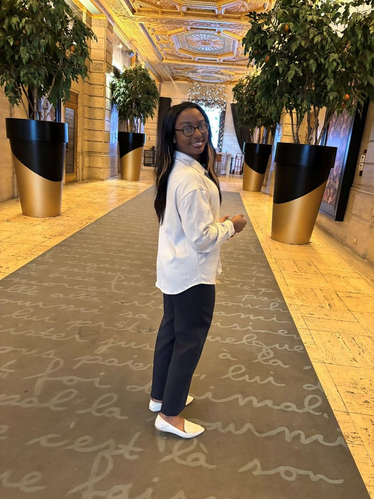

Opportunity Today · Empowerment Tomorrow
The Your Chance Fund donates to aspiring and early-stage business owners by providing capital, connections, and comprehensive support to help their businesses grow and thrive.
We believe there are outstanding entrepreneurs who simply don't meet the requirements of traditional lending institutions — they just need a chance. TYCF gifts capital and wraparound support to aspiring and existing business owners with good character, a sustainable plan, and a desire to give back to their community.
From first connection to ongoing growth — a structured, accountable path.
Philanthropic capital is pooled and held at the Greater Cincinnati Foundation, ready for deployment.
We identify aspiring entrepreneurs and business owners through community networks and referrals.
Candidates present their concept or operation; we evaluate viability, impact, and readiness.
The Committee selects recipients and determines grant amount and level of support needed.
Awardees are onboarded with legal guidance, business coaching, mentors, and connectors.
Capital is delivered through a structured, accountable channel to the entrepreneur.
We keep opening doors — coaching, legal services, and long-term relationships for growth.
Stronger businesses. More jobs. Stronger communities.
The values that shape every decision we make.
Lower barriers and expand opportunities for entrepreneurs.
Funding is paired with structured support and relationships.
Leverage local institutions and relationships.
Use trusted intermediaries for fund distribution.
Focus on long-term business success and community impact.
Hear from the entrepreneurs we've backed — in their own words.

Grace ShorterFounder · Venture Lab Summer 2025
To Whom It May Concern,
I am writing this letter to express my sincere gratitude to The Your Chance Fund. I met Mr. Shoecraft at Demo Day for Venture Lab's Summer 2025 accelerator program, and immediately recognized him as both kind and discerning. As someone relatively new to the entrepreneurial space, I am constantly inundated with resources that are either unhelpful or require significant time and effort before yielding any real benefit. The Your Chance Fund is the exact opposite. Every interaction I had with the fund was marked by intentionality, care, and efficiency. Not only did the fund provide an extremely helpful grant, but it also connected me with resources that produced tangible, meaningful outcomes for my company.
It is abundantly clear to me that The Your Chance Fund should be expanded as quickly as possible. The depth of expertise and integrity demonstrated by the fund's decision-makers is rare and urgently needed at a broader scale. Many resources require founders to fit into predefined categories or rigid frameworks in order to receive support. The Your Chance Fund operates at a far higher level: evaluating ideas on their conceptual strength, integrity, and potential for real impact, and demonstrating a rare ability to recognize and clarify that potential through thoughtful inquiry.
When I began the grant application process, I was deeply discouraged. Much of the small business ecosystem is consumed by numbers, projected revenue, current metrics, and abstract forecasts. For the first time in a long while, I was asked not only about my business, but about me as a founder and my passion for the work itself. The Your Chance Fund invests not just capital and time, but belief. They breathe life into founders at moments when it is most needed.
Thank you to The Your Chance Fund for the work you do and the standard you set.
Sincerely,Grace Shorter
Founders and partners share their experience with The Your Chance Fund.
Whether you're building a business or investing in someone who is — there's a place for you at The Your Chance Fund.